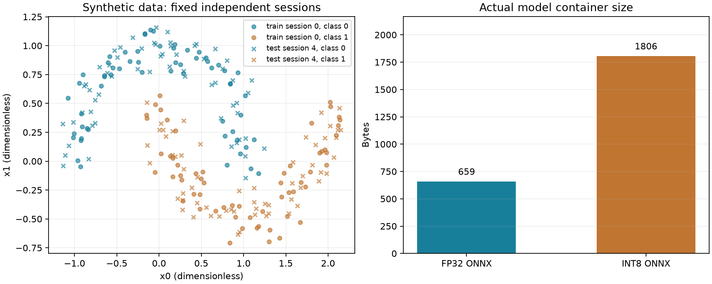

综合工程：从理解到独立交付
选择符合当前目标的一项工程。先预测结果，再运行，再改变一个需求或故障场景。每项区分已验证的参考实现与目标设备验收，避免把阅读、复制或模型通过当成技术掌握。
环境：Python 3.11+；P03/P05第三方依赖按 本次运行版本 安装。进入书库根目录执行命令；基础项目只使用标准库。
python -m pip install -r projects/requirements.txt
P01 · 数据帧与采集通路
主机帧链与完整固件链接/向量已验证；板上采样、电气与时间仍需实测。
机制与契约
协议采用 A5 5A + 小端序号/12位原始值 + CRC16；输入分片、噪声或校验失败后恢复。标定使用 3.3V 名义参考，实际参考与误差需测量。
完整源码与运行
python projects/p01_acquisition.py
学习步骤
先手算一帧的长度和可用缓冲上限；运行四种分片大小；改变校验字节并确认下一帧仍能解析。
行为验收
CRC 标准串=0x29B1；三个样本按序恢复；坏帧计数增加；缓存最多7字节；有效最大码转换为3.3V。
迁移到目标
接入下面的 STM32F103 固件；保存串口原始字节，Python Parser 回放结果与 ADC 输入对照。进一步改成定时器触发+DMA，统计采样间隔、丢样与消费者积压。
完整 STM32F103C8 固件与接板验收
目标：64KiB Flash/20KiB RAM 的 STM32F103C8，复位 HSI 名义8MHz。PA0=ADC1通道0，PA9=USART1 TX，串口9600 8N1；使用3.3V电平接收器且共地。输入保持在器件允许模拟范围，用已知电压核对码值和参考电压。程序不依赖CMSIS/libc，包含启动、向量、链接脚本和外设初始化。
源码：main.c · startup.c · linker.ld · Makefile
cd projects/p01_stm32f103 make all arm-none-eabi-size node.elf arm-none-eabi-objdump -s -j .isr_vector node.elf
先检查向量首字为0x20005000，次字为带Thumb位的Reset_Handler地址；再由你所用调试器按芯片文档烧录。抓取UART原始数据交给Parser。本次完整链接记录：build-record.json；可对照ELF与map。这不是板上运行记录。当前实现每次处理后delay(100)，所以不能宣称精确10Hz；升级为绝对周期或定时器触发后再验收实际时基。ADC超时不会用0冒充采样，序号间隙可暴露失败；序号回绕/重启还需会话信息扩展。
官方核对：RM0008。读寄存器、时钟和电气参数时结合实际器件数据手册。
P02 · 实时预算与离线积压
已验证分析与队列政策；真实 RTOS 调度、驱动时序和功耗仍需目标测量。
机制与契约
固定优先级响应时间迭代 R=C+Σceil(R/Ti)Ci，条件为独立、单核、可抢占周期任务且 D≤T。本模型不含阻塞、抖动与 ISR 开销。离线积压容量固定，满时拒绝新记录并计数。
完整源码与运行
python projects/p02_realtime.py
学习步骤
先算任务(10,2,10)/(20,5,20)的响应；再运行正常与过载案例；改变队列容量并检查丢弃与FIFO。
行为验收
响应时间为2/7ms；8ms高优先级任务造成低优先级超期；离线队列无无界增长，丢弃可观察。
迁移到目标
把同样任务周期和队列政策落实到 FreeRTOS/Zephyr 的目标工程；明确优先级映射、ISR成本与锁阻塞，测量实际响应和抖动。不得直接把这个分析值当板上 WCET。
P03 · 标准签名与升级状态
真实密码算法和持久化状态已验证；信任锚、Bootloader与闪存掉电须目标验收。
机制与契约
使用真实 Ed25519 对规范化版本+SHA256清单签名。先验签，再检查版本和待确认状态；SQLite持久化A/B元数据；健康失败保持旧槽，确认后提高已确认版本。
完整源码与运行
python projects/p03_signed_update.py
学习步骤
先预测篡改载荷、复位、健康失败、确认成功、旧版本重放的结果，再执行；只改变一个条件并解释状态转换。
行为验收
错误签名/载荷被拒；staging后重启仍保留状态；失败回旧槽；成功切B；有效签名的旧版本仍被拒。
迁移到目标
这是状态与存储参考模型，未模拟所有闪存切写点。目标工程要加入器件兼容、真实固件槽、写入校验、每个擦写点掉电、看门狗确认、信任锚和密钥轮换。固件反回滚与模型业务回退分开设计。
P04 · 可重启边缘服务
主机HTTP与数据库已验证；Linux镜像、真实驱动和服务部署需目标环境验证。
机制与契约
实际 loopback HTTP端点+SQLite存储，schema和有限数先校验；以(session,seq)幂等，同键不同载荷拒绝，乱序到达保留。事务与连接生命分别管理。
完整源码与运行
python projects/p04_gateway.py python projects/p04_gateway.py --serve --db gateway.db --port 8790
学习步骤
运行内置HTTP测试；再以 --serve 启动，在 /health 查状态，对 /sample POST一条记录、重复记录与冲突记录。
行为验收
实际HTTP往返成功；相同载荷返回duplicate且不增加行数；冲突被拒；两条乱序记录持久化，连接与服务可关闭。
迁移到目标
在Linux侧构建 B10/labs/btn_platform.c，核对目标设备树IRQ与compatible，记录模块加载/卸载与故障日志。把实际器件读数接到服务；补用户权限、TLS/认证、systemd、退出清理、磁盘满与重启。
真实内核模块的构建入口
Makefile · btn_platform.c。在有对应内核源码/配置的Linux环境构建；KDIR指向该目标的构建树，不是用户态sysroot。
cd b10/labs make KDIR=/absolute/path/to/kernel/build ARCH=arm CROSS_COMPILE=arm-linux-gnueabihf-
设备树 compatible="demo,btn"；IRQ控制器、引脚、触发方式和复用必须按实际板卡修改。构建、加载、按键中断、卸载和重复绑定分别验收；不要把主机IRQ模型当成这些步骤已通过。
P05 · 真实模型通路与独立评估
真实训练、导出、量化和CPU推理已验证；这是CPU端侧运行时参考，不是MCU/NPU实测。
机制与契约
六个合成会话固定分训练/验证/独立测试；训练集拟合标准化；比较逻辑回归基线与16单元MLP；导出包含预处理的ONNX，动态INT8后使用真实ONNX Runtime CPU执行。
完整源码与运行
python projects/p05_model_pipeline.py
学习步骤
阅读report.json中的数据来源、切分和版本；比较浮点对拍、量化误差、验证与测试指标、文件大小和实测延迟。先预测小模型量化后是否一定更小。
行为验收
浮点运行时与训练参考误差<1e-5；量化输出有限；按验证条件选择候选，再用独立测试资格检查；延迟由实际运行测量。
迁移到目标
数据是 make_moons 合成输入，不能据此宣称IMU/音频等业务准确率。真实任务要用独立设备会话替换，测量误报漏报；固定预处理/模型/固件版本；目标平台验收算子支持、峰值RAM、端到端延迟和功耗。
实际运行结果：report.json · 固定会话数据 · 浮点模型 · 量化模型。运行命令会重建这些结果；延迟随机器与负载变化。
特别检查：图小或权重少时，量化元数据可能使文件更大。动态量化的批次尺度也会影响数值，部署输入批次与测试方式须一致。合成数据指标只证明这份实验可运行，不证明实际业务效果。
官方核对：ONNX Runtime · 量化文档。

P06 · 数据与发布台账
数据与发布政策已验证；真实broker、设备群和运维部署另验。
机制与契约
复用真实SQLite接入；业务数据保留会话、事件时间和幂等键；模型发布要求评估通过且当前版本匹配，防止陈旧任务覆盖新发布；保留审计记录。
完整源码与运行
python projects/p06_data_loop.py
学习步骤
运行重复、乱序、评估失败、发布、陈旧发布和显式回退；读台账解释每个转换。
行为验收
数据不重复；乱序记录可排序；失败评估不发布；旧预期版本被拒；回退和拒绝都有审计。
迁移到目标
消息传输目前为直接适配调用。接入真实MQTT与服务端后，验证断网缓存、QoS重投、schema变化、设备鉴权、灰度范围与回退；发布应绑定模型hash和独立评估报告。
达到掌握的判据：能说明假设、独立修改、识别错误结果并完成目标迁移。参考实验的成功只覆盖所声明的验证层级。